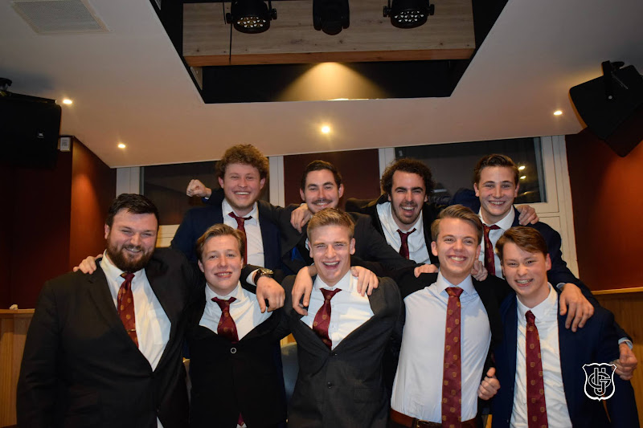

Over Abraxas
Herendispuut Abraxas is opgericht op 28 november 2023 in ’s-Hertogenbosch. Met elf trotse leden is het jongste dispuut der k.s.v. Gremio Unio opgericht met het devies: “Infinitum intuere, mens nulla est”, wat zich vrij vertaald naar: “Blik op oneindig, verstand op nul.” Dit motto staat voor een onbeperkte en open denkwijze vanuit alle leden van Abraxas. De heren vinden het belangrijk om samen met iedereen binnen de vereniging herinneringen te maken en het maximale uit hun studententijd te halen. Vanuit deze visie zijn zij actief binnen k.s.v. Gremio Unio en wekelijks te vinden in hun stamkroeg ’t Pantoffeltje. Iedere donderdagavond zijn wij daar te vinden, gelegen aan de Korte Putstraat 11. Na het nuttigen van een goed glas bier en een potje vingeren verplaatsen we ons naar Sociëteit 't Swijnshooft om de avond daar voort te zetten.
Daarnaast zetten wij ons als leden van Abraxas met veel enthousiasme in voor k.s.v. Gremio Unio. Wij nemen deel aan verschillende commissies en maken onderdeel uit van het hoofdbestuur der k.s.v. Gremio Unio, en helpen de vereniging daarmee naar een hoger niveau. Niet alleen door onze inzet binnen commissies en het hoofdbestuur, maar ook door tapavonden, activiteiten en andere sociale evenementen creëren wij momenten om nooit te vergeten. De leden van Abraxas zijn gedreven om samen met de vereniging en de leden die wij rijk zijn een onvergetelijke studententijd te beleven.

ALV 28 november 2023
Onze visie
Onze lijfspreuk, “Infinitum intuere, mens nulla est” (“Blik op oneindig, verstand op nul”), vormt de kern van de visie van Abraxas. Deze visie wordt gekenmerkt door een open houding en een manier van denken waarbij mensen zichzelf kunnen zijn zonder zich voortdurend zorgen te maken over verwachtingen van anderen. De kleuren van Abraxas zijn paars en geel. Paars staat symbool voor vernieuwing, mystiek en oneindige mogelijkheden, terwijl geel de verbondenheid met de leden van k.s.v. Gremio Unio vertegenwoordigt.
Leden
Reunisten
Dagen sinds oprichting
Stamkroeg
Taveerne 't Pantoffeltje, beter bekend als de Slof, is de thuisbasis van Abraxas. Wij hebben een ijzersterke band met deze legendarische Bossche kroeg aan de Korteputstraat. Of het nu gaat om de wekelijkse donderdagborrel, een welverdiend herstelbiertje op vrijdagmiddag of een spontane avond die volledig uit de hand loopt: de Slof heeft alles in huis voor de perfecte borrel. Met een uitgebreide bier-, wijn- en cocktailkaart én de gezelligste sfeer van Den Bosch is dit de plek waar onze mooiste verhalen beginnen.
k.s.v. Gremio Unio
Herendispuut Abraxas is een trots onderdeel van Gremio Unio in 's-Hertogenbosch. Als dispuut zijn wij nauw verbonden aan deze vereniging en voelen wij ons sterk betrokken bij alles wat het verenigingsleven zo bijzonder maakt. Onze leden zetten zich actief in binnen verschillende commissies, werkgroepen en zijn actief binnen het hoofdbestuur der k.s.v. Gremio Unio. Of het nu gaat om het meedenken over beleid, het helpen bij evenementen of het organiseren van sociale activiteiten: wij dragen ons steentje bij. De band met Gremio Unio is voor ons essentieel. Samen zorgen wij voor een bruisend, hecht en betekenisvol studentenleven in Den Bosch, waarin vriendschap, ontwikkeling en plezier centraal staan. Met respect voor traditie en oog voor de toekomst bouwen wij iedere dag verder aan een vereniging waar iedereen zich thuis voelt.